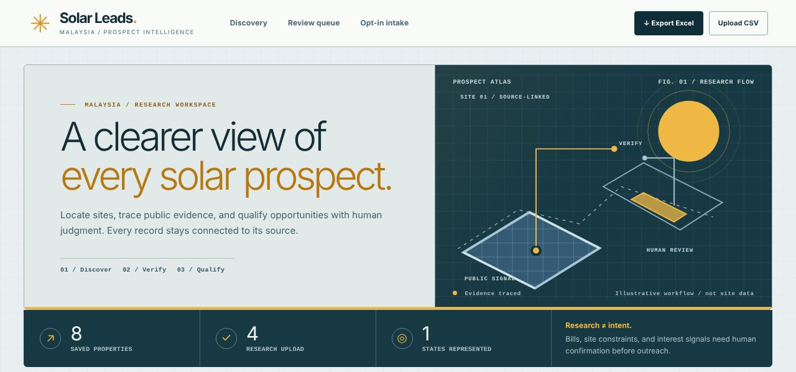
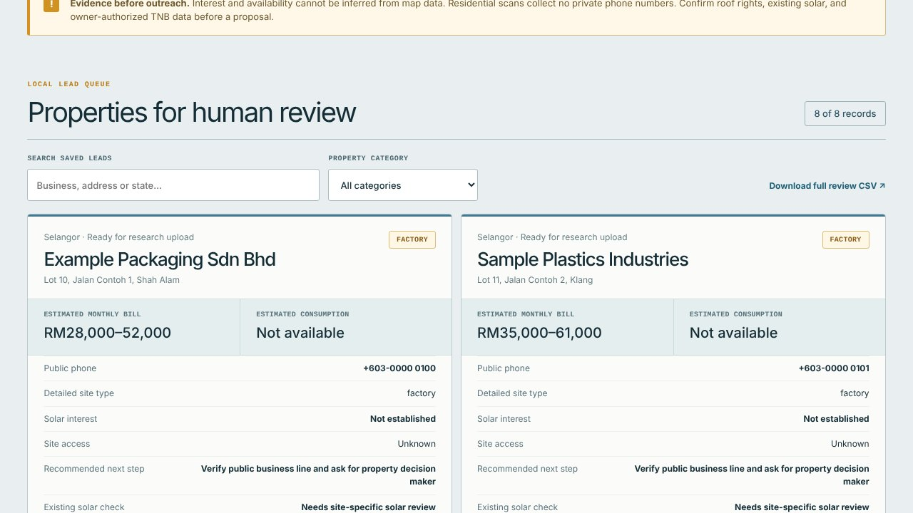
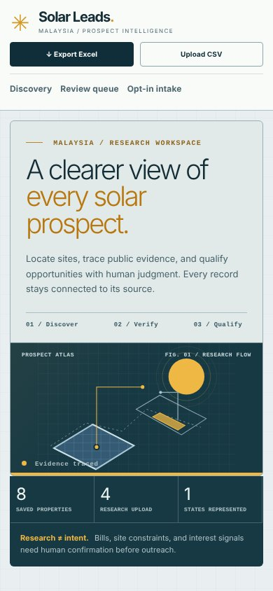

The problem
Lead lists are easy to make and hard to trust
Solar installers need commercial and industrial prospects, but bought or scraped lists are full of duplicates, out-of-date numbers and guesses dressed up as facts — “high electricity bill”, “interested in solar”. Sales teams waste calls, and some lists cross the line on privacy.
I wanted a list where every field says where it came from and how sure it is.
The new look
A field atlas, not a spreadsheet
The first version worked but looked like a form. The redesign treats prospect research like surveying: calm enough for careful review, with sunlight used as a signal rather than decoration. Solar amber appears only where there is evidence to follow or an action to take.

- Two-part opening, a dark count rail, a focused scan form, then a dense review queue — thin rules instead of floating cards.
- Windows system fonts (Bahnschrift, Segoe UI, Consolas), so the local app needs no font downloads.
- On a phone, actions go full width, counts stay on one row and each lead stacks into a single column.
How it works
A five-step pipeline with a person in the loop
Each scan picks a state and a prospect type. Every lead moves through the same five steps, and nothing reaches the export until it has passed the checks.
- DiscoverPulls business and property records from OpenStreetMap.
- De-duplicateMatches stable record IDs, so repeat scans only bring new leads.
- VerifyConfirms address and phone on the official business site. Checks expire after 90 days.
- QualifyA reviewer records the call outcome, real bill and usable roof area.
- ExportFormatted Excel workbook with filters, or a CRM-ready CSV.


Data rules
Estimates are labelled as estimates
- Provenance: every phone number keeps the exact page it came from.
- Confidence: electricity use, bill and supply level stay low- or medium-confidence until the owner confirms real numbers.
- No false negatives: “no solar found on the map” is recorded as unknown, never as “no solar”.
- Interest needs evidence: a lead is only marked “Interested” with a note of what the contact actually said.
- Privacy: homes never have contact details pulled from maps; opt-outs are removed from every export.
Source code is being prepared for GitHub, with all real lead data left out. Screenshots here use fictional businesses.